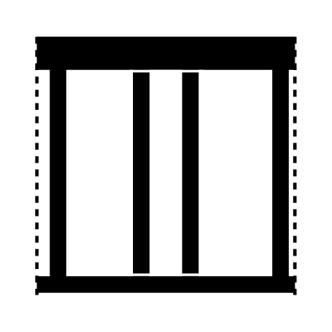
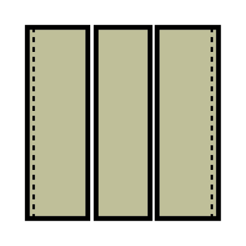
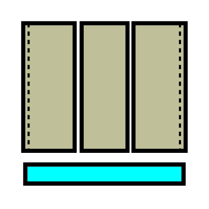
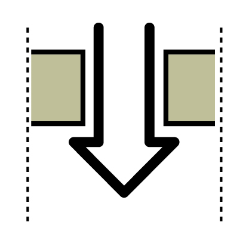
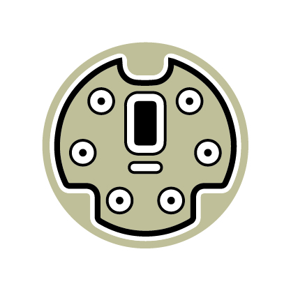
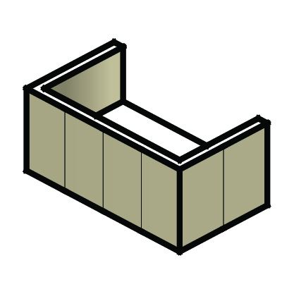

ภาพรวมระบบและขั้นตอนการทำงาน (Workflow Lifecycle)
ลำดับการทำงานมาตรฐานในการสร้างโครงสร้างผนังภายนอกและแผ่นผนังสำเร็จรูป
กฎเหล็กสำคัญที่สุดของระบบ Exterior Wall:
การทำงานต้องเรียงลำดับจากซ้ายไปขวาเสมอ:
Corner → Window Set → Stud → [เช็ค Stud 225] → Pannel
*ห้ามข้ามขั้นตอน* เพราะ Window Set ต้องใช้อ้างอิงเสามุม Corner, Stud ต้องใช้อ้างอิงเสามุมและขอบหน้าต่าง, และ Pannel ต้องอ้างอิงช่วงเสาทั้งหมด หากเผลอลบเสามุม Corner1/2/3 ทิ้งไป ปุ่ม Stud จะไม่ทำงาน!
เสามุม (Corner Studs)
ครอบยูนิตในเลเยอร์ S-Unit รัน Stud Corner เพื่อติดตั้งเสามุม Corner1, Corner2, Corner3, CornerIn ลงใน S-STD
กรอบหน้าต่าง & เสาช่องเปิด
ครอบยูนิต รัน Pannel Window Set เพื่อสร้างกรอบหน้าต่าง 3D ลงใน S-Window และเสาขอบช่องเปิดลงใน S-STD
เสาซอย & เช็คระยะ 225
รัน Stud Standard ซอยเสาระยะ 900 มม. จากนั้นกด Add Extra → เช็ค Stud 225 เพื่อสลับเป็น AAFQ20040 อัตโนมัติ
แผ่นผนัง & ส่งออก BOM
รัน Pannel Standard กรุแผ่นผนังภายนอก AAFP → ปรับแต่งงานระเบียง/กันซึม/Hood → กด Export CSV สรุปยอดลงไฟล์ BOMEX.csv
คู่มือขั้นตอนการกดใช้งานแต่ละไอคอน (สำหรับคนทำงาน)
สรุปขั้นตอนการปฏิบัติงานจริง วิธีการครอบเลือกวัตถุ, การกดปุ่ม และสิ่งที่ระบบสร้างให้ในโมเดล
1. Stud Corner (เสามุมอาคาร)
Heim_MakeCorner.rbลากเมาส์ครอบ Unit ในเลเยอร์ S-Unit ที่ต้องการทำ
กดไอคอนครั้งเดียว ระบบประมวลผลมุมยูนิตอัตโนมัติ
ติดตั้ง Corner1 (AAFQ1013X), Corner3, CornerIn ลงเลเยอร์ S-STD
2. Pannel Window Set (กรอบหน้าต่าง & เสาประกบช่องเปิด)
Heim_MakeDoor.rbลากเมาส์ครอบ Unit ที่มีบล็อกช่องเปิด 2D ในเลเยอร์ A-WIND หรือ A-DOOR
กดไอคอนครั้งเดียว ระบบอ่านขนาดและทิศทางอัตโนมัติ
สร้างกรอบหน้าต่าง 3D ใน S-Window และวางเสาขอบหน้าต่างซ้าย-ขวา (Corner2) ใน S-STD

ลำดับที่ 33. Stud Standard (เสาซอยมาตรฐาน 900 มม.)
Heim_MakeSTD.rbลากเมาส์ครอบ Unit ในเลเยอร์ S-Unit (ที่รัน Corner และ Window แล้ว)
กดไอคอนครั้งเดียว ระบบยิง Raytest ซอยเสาระหว่างจุด
เติมเสาซอยย่อย AAFQ2002X ทุกๆ ก้าวโมดูล 900 มม. ลงในเลเยอร์ S-STD
4. ตรวจสอบและสลับเสาอัตโนมัติ: Add Extra → "เช็ค Stud 225"
ระบบแก้ปัญหาหน้างานจริง กรณีเศษทศนิยมคลาดเคลื่อนทำให้เสาขอบหน้าต่างที่ระยะ 225 มม. (หรือ 332 มม. จากมุม) กลายเป็น AAFQ2001X หรือ AAFQ2002X แทนที่จะเป็น AAFQ20040
กดไอคอน Add Extra → ใน Dropdown เลือกคำว่า "เช็ค Stud 225" (เลือกยูนิตหรือไม่เลือกก็ได้ ระบบจะสแกนให้)
ระบบจะไฮไลต์ชิ้นงานที่เป็นปัญหา (กรอบสีน้ำเงิน) และแสดงกล่องข้อความแจ้งเตือนพร้อมระบุชื่อยูนิต
กดยืนยัน [Yes] ในกล่องข้อความ ระบบจะดึง Definition AAFQ20040 มาแทนที่ให้ทันทีโดยรักษาพิกัดเดิม 100%

ลำดับที่ 55. Pannel Standard (แผ่นผนังสำเร็จรูปภายนอก AAFP)
Heim_MakePannel.rbลากเมาส์ครอบ Unit ในเลเยอร์ S-Unit
กดไอคอนครั้งเดียว ระบบอ่านตาราง IM.xlsx ติดตั้งแผ่น
วางแผ่นผนังภายนอก AAFP... ลงในเลเยอร์ S-Pannel พร้อมเคลียร์ Stud ที่ซ้ำซ้อนออกให้อัตโนมัติ

6. Pannel WaterProof (กันซึมระเบียง)
Heim_WaterProof.rb
วิธีใช้: ลากเส้น Line (Edge) ในเลเยอร์ Layer0 ตามแนวผนังระเบียง → เลือกเส้น → กดไอคอนเพื่อเปลี่ยนแผ่นเป็นรหัสกันซึม WA_... ในเลเยอร์ S-WaterProof

7. Pannel Hood (ช่องท่อดูดควัน)
Heim_Hood.rb
วิธีใช้: คลิกเลือกบล็อกช่องเปิดดูดควัน (เลเยอร์ Hood) → กดไอคอน ระบบจะเจาะแผ่นผนังภายนอกและวางแผ่นสำเร็จรูปรับท่อระบายควันในเลเยอร์ S-Hood

8. Pannel Connector (ข้อต่อแผงผนัง)
Heim_Connector.rb
วิธีใช้: ไม่ต้องเลือกวัตถุล่วงหน้า → กดไอคอน → นำเมาส์ไปคลิกที่ตำแหน่งแผงผนังเพื่อติดตั้งแผ่นเหล็กยึดประสานแผงผนังลงในเลเยอร์ S-Connector

9. Balcony Unit (ผนังยูนิตระเบียง)
Heim_Balcony_Unit.rb
วิธีใช้: ไม่ต้องเลือกวัตถุ → กดไอคอน → คลิกจุดที่ 1 (จุดเริ่มผนังระเบียง) → คลิกจุดที่ 2 (จุดสิ้นสุด) ระบบจะสร้างแผงผนังระเบียงและแผ่นผนังข้างลงในเลเยอร์ S-BalconyUnit
10. Add Extra (อุปกรณ์เสริมผนัง)
Heim_AddExtra.rbวิธีใช้: ครอบยูนิต → กดไอคอน → เลือกเมนู Dropdown: เช็ค Stud 225, Gasket (ซีลยาง AATE00210/220/200), WaterProof 2F, Border (เว้นบัว), หรือ Void (เจาะรูพิเศษ)
11. Check Data (ตรวจสอบ Takeoff)
Heim_EWQTODialog.rbวิธีใช้: เลือก Unit หรือคลิกชิ้นส่วน → กดไอคอน → หน้าต่างตาราง HTML จะเปิดขึ้นมาแสดงรายการ Takeoff ถอดแบบเปรียบเทียบกับฐานข้อมูล SQL Server (PS / MIM Lookup)
12. Export CSV (สรุปรายการวัสดุ BOM)
Heim_QuanExt.rb
วิธีใช้: ปิดไฟล์ Excel เก่าก่อน → ลากครอบ Unit ทั้งหมด → กดไอคอน ระบบจะสแกนเลเยอร์หมวด S-* สรุปยอดลงไฟล์ BOMEX.csv และเปิด Excel อัตโนมัติ
13. Delete (ลบชิ้นส่วนตามหมวด)
Heim_DeleteExt.rb
วิธีใช้: เลือก Unit → กดไอคอน → เลือกประเภท: Pannel | STD | Window | Hood | WaterProof | Connector | Gasket | Border | All เพื่อลบอย่างปลอดภัยโดยไม่กระทบตัวยูนิต
สถาปัตยกรรมโค้ดและตรรกะการคำนวณ (Module Logic)
เจาะลึกการทำงานภายในสคริปต์ Ruby แต่ละตัว และเงื่อนไขการเลือกชิ้นส่วน
การวิเคราะห์มุมอาคาร (Heim_MakeCorner.rb)
สคริปต์จะค้นหาจุดพิกัด 4 มุม (Corner 0, 1, 2, 3) จากคอมโพเนนต์ EE-GRID-UNIT และทำการยิง Raytest ตรวจสอบการมีอยู่ของยูนิตข้างเคียง:
- Corner1 (มุมเปิดออกภายนอก): ใส่เสารหัส
AAFQ1013X(เหล็กหนา 1.6 มม.) หรือAAFQ1003X(เหล็กหนา 2.3 มม.) ชดเชยจุดวาง Origin เข้ามา $107\,\text{mm}$ ทั้งแนว X และ Y - Corner3 (มุมบรรจบ 3 ยูนิต): เป็นจุดต่อพิเศษที่มี 3 ยูนิตมาชนกัน จะวางเสารหัส Corner3 เพื่อรองรับระยะเหล็กที่ซ้อนกัน
- CornerIn (มุมเว้าภายใน): กรณีอาคารรูปตัว L หรือเว้าเข้าใน จะคำนวณตำแหน่งผ่านฟังก์ชัน
checkInCornerและวางเสาเข้ามุมใน
ตรรกะการวางเสาประกบช่องเปิด (Heim_MakeDoor.rb)
คำนวณระยะขอบซ้าย (lfullhalf) และขอบขวา (rfullhalf) จากเสามุมยูนิตถึงขอบหน้าต่าง เพื่อตัดสินใจเลือกรหัสเสา:
| เงื่อนไขระยะห่างถึงมุมเสา | ความกว้างช่องเปิด (dwidth) | รหัสเสาที่เลือกใช้งาน (Part ID) | ลักษณะการใช้งาน |
|---|---|---|---|
| ≤ 332 มม. (ระยะชิดมุม 225) | ≤ 2700 มม. | AAFQ20040 | เสาประกบหน้าต่างระยะชิดเสาพิเศษ (ปีกแคบ) |
| ≤ 332 มม. | > 2700 มม. | AAFQ20090 | เสาประกบหน้าต่างชิดเสาสำหรับบานกว้างพิเศษ |
| > 332 มม. (ระยะทั่วไป) | ≤ 1350 มม. | AAFQ2002X | เสาประกบหน้าต่างมาตรฐานสำหรับบานขนาดเล็ก-กลาง |
| > 332 มม. (ระยะทั่วไป) | 1351 - 2700 มม. | AAFQ2001X | เสาประกบหน้าต่างมาตรฐานสำหรับบานขนาดใหญ่ |
| > 332 มม. (ระยะทั่วไป) | ≥ 3600 มม. | AABK35210 | เสาประกบหน้าต่างเสริมกำลังพิเศษ |
| ไม่จำกัดระยะ | ชื่อบานมีคำว่า NOTATAKI | YYFQ00060 | เสาขอบประตูทางเข้าชนิดพิเศษ No-Tataki |
ตรรกะระบบตรวจสอบและสลับเสาอัตโนมัติ (Heim_Check332.rb)
ระบบใหม่ที่เพิ่มเข้ามาเพื่อขจัด Human Error และความคลาดเคลื่อนของทศนิยม:
- ขอบเขตการตรวจจับ: กวาดค้นหา Component ที่มี Definition เป็น
AAFQ2001XหรือAAFQ2002X - ช่วงระยะพิกัด (Range Filter): วัดระยะแบบ 3 มิติไปยังเสามุม
Corner1/Corner3หรือขอบยูนิต หากระยะตกอยู่ในช่วง $200.0 - 370.0\,\text{mm}$ (ครอบคลุมระยะหน้าเสา $225\,\text{mm}$ และระยะเซ็นเตอร์ $332\,\text{mm}$) จะถูกดักจับทันที - กระบวนการสลับ Component (Definition Swapping):
mod.start_operation("Replace with AAFQ20040", true) found_issues.each do |item| item[:stud].definition = def40 # สลับ Definition ทันทีโดยคง Transformation เดิม end mod.commit_operation - ข้อความผลลัพธ์:
- • พบปัญหา: ⚠️ คำเตือน: พบ AAFQ2001X / AAFQ2002X | วาง 225 (ปรับเป็น AAFQ20040)
- • ปลอดภัย: ✅ ปลอดภัย! ไม่พบ AAFQ2001X หรือ AAFQ2002X | วาง 225 |
การวางแผ่นผนัง AAFP และฟังก์ชันเคลียร์ Stud ซ้ำซ้อน (Heim_MakePannel.rb)
เมื่อรัน Pannel ระบบจะวางแผ่นผนังสำเร็จรูปตามระยะเสา และรันฟังก์ชัน checkDupSTD เพื่อตรวจหา Stud ที่อยู่ในระนาบเดียวกับแผ่นหน้าต่าง หากมี Stud ตัวใดซ้อนทับกันเกินระยะ Tolerance ระบบจะทำการ .erase! ลบ Stud ตัวที่ซ้ำซ้อนออกให้อัตโนมัติ เพื่อให้ยอดถอดแบบ BOM ถูกต้องแม่นยำ
ตารางสรุปเลเยอร์และคอมโพเนนต์ (Component & Layer Matrix)
ฐานข้อมูลชิ้นส่วน รหัส Part ID เลเยอร์ และหน่วยนับในระบบถอดแบบ BOM
| หมวดหมู่ชิ้นงาน | Layer ใน SketchUp | รหัสชิ้นส่วน (Part ID) | ชื่อคอมโพเนนต์ / รายละเอียดสเปก | หน่วยใน BOM |
|---|---|---|---|---|
| เสามุม (Corner) | S-STD | AAFQ1013X | เสามุมภายนอก Corner1 (เหล็กหนา 1.6 มม.) | ชิ้น (EA) |
| AAFQ1003X | เสามุมภายนอก Corner1 (เหล็กหนา 2.3 มม.) | ชิ้น (EA) | ||
| Corner3 | เสามุมจุดต่อร่วม 3 ยูนิต (3-Unit Joint) | ชิ้น (EA) | ||
| CornerIn | เสามุมเว้าภายใน (Internal Recessed Corner) | ชิ้น (EA) | ||
| เสาขอบหน้าต่าง (Window Studs) | S-STD | AAFQ20040 | เสาขอบหน้าต่างระยะชิดมุม ≤ 332 มม. (ระยะ 225 บาน ≤ 2700) | ชิ้น (EA) |
| AAFQ20090 | เสาขอบหน้าต่างระยะชิดมุม ≤ 332 มม. (สำหรับบาน > 2700) | ชิ้น (EA) | ||
| AAFQ2002X | เสาประกบช่องเปิดมาตรฐานทั่วไป (บาน ≤ 1350 มม.) | ชิ้น (EA) | ||
| AAFQ2001X | เสาประกบช่องเปิดมาตรฐานทั่วไป (บาน 1351 - 2700 มม.) | ชิ้น (EA) | ||
| AABK35210 | เสาประกบช่องเปิดเสริมกำลังพิเศษ (บาน ≥ 3600 มม.) | ชิ้น (EA) | ||
| YYFQ00060 | เสาขอบประตูทางเข้าชนิดพิเศษ NOTATAKI | ชิ้น (EA) | ||
| กรอบช่องเปิด 3D | S-Window | Window_Set | ชุดบล็อกโมเดล 3D ประตูและหน้าต่าง | ชุด (Set) |
| เสาซอยมาตรฐาน | S-STD | AAFQ2002X | เสาซอยย่อยก้าวระยะ 900 มม. (Intermediate Stud) | ชิ้น (EA) |
| แผ่นผนังภายนอก | S-Pannel | AAFP... | แผ่นผนังสำเร็จรูปภายนอก (Exterior Cladding Panels) | แผ่น (Sheet) |
| แผ่นกันซึมระเบียง | S-WaterProof | WA_... | แผ่นผนังเคลือบสารกันซึมสำหรับระเบียงและพื้นที่เปียก | แผ่น (Sheet) |
| ช่องท่อดูดควัน | S-Hood | Hood_Pannel | แผ่นผนังสำเร็จรูปเจาะช่องรับท่อดูดควัน | แผ่น (Sheet) |
| ข้อต่อแผงผนัง | S-Connector | Connector | แผ่นเหล็กยึดประสานรอยต่อระหว่างแผงผนัง | ชิ้น (EA) |
| ผนังยูนิตระเบียง | S-BalconyUnit | Balcony_Wall | แผงผนังข้างและแผ่นปิดยูนิตระเบียง | แผง (Set) |
| อุปกรณ์ซีลกันรั่ว (Gasket) | S-Gasket | AATE00210 | เส้นยางกันซึม Gasket Type P1 | เส้น (M) |
| AATE00220 | เส้นยางกันซึม Gasket Type P2 | เส้น (M) | ||
| AATE00200 | เส้นยางกันซึม Gasket Type U / IC | เส้น (M) |
ข้อแนะนำและการแก้ไขปัญหาที่พบบ่อย (Troubleshooting)
วิธีจัดการปัญหาที่มักพบบ่อยระหว่างการขึ้นโมเดลผนังภายนอก
Q: ขึ้นเตือน "Stud exist in Unit - Please Check"
สาเหตุ & วิธีแก้: ในยูนิตนั้นมีชิ้นส่วนอยู่ในเลเยอร์ S-STD อยู่แล้ว ระบบบล็อกไม่ให้รันซ้ำเพื่อป้องกันเสาซ้อนทับกัน ให้คลิกปุ่ม Delete → เลือกประเภท STD เพื่อเคลียร์เสาเดิมออกก่อน แล้วจึงรันคำสั่งใหม่
Q: เสาขอบหน้าต่างหลุดเป็น AAFQ2002X ทั้งที่วัดได้ 225 หรือ 332 มม.
สาเหตุ & วิธีแก้: เกิดจากเศษทศนิยมในการวางบานคลาดเคลื่อนเกิน 332.0 มม. เล็กน้อย ทำให้สคริปต์เลือกเสาขนาดทั่วไปอัตโนมัติ ให้คลิกปุ่ม Add Extra → เลือก "เช็ค Stud 225" → กด [Yes] ระบบจะสลับเป็น AAFQ20040 ให้ทันทีทุกจุด
Q: กดปุ่ม Stud Standard แล้วเงียบ ไม่ยอมซอยเสา
สาเหตุ & วิธีแก้: ในเลเยอร์ S-STD ขาดเสามุมหลัก (Corner1 / Corner2 / Corner3) เนื่องจากถูกลบออกไป สคริปต์จึงไม่สามารถยิง Raytest วัดระยะได้ ให้กดรัน Stud Corner และ Pannel Window Set ใหม่อีกครั้ง
Q: เกิด Error ตอนกดปุ่ม Export CSV
สาเหตุ & วิธีแก้: ไฟล์ BOMEX.csv กำลังถูกเปิดค้างอยู่ในโปรแกรม Microsoft Excel ทำให้ระบบไม่สามารถเขียนทับได้ ให้ปิดโปรแกรม Excel ก่อนแล้วกดไอคอน Export CSV ใหม่อีกครั้ง